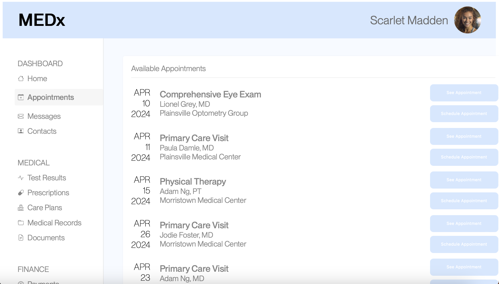
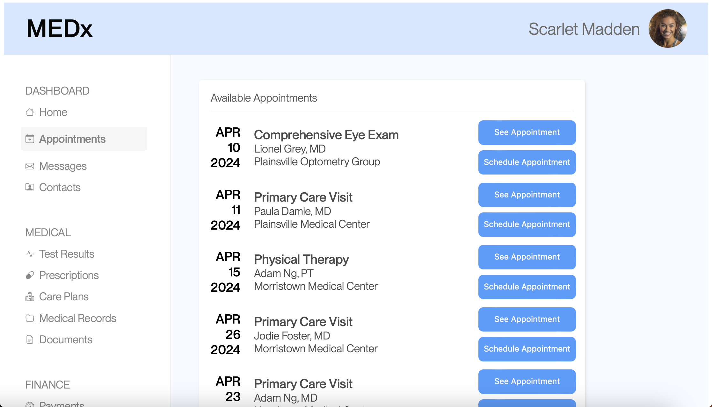

<!DOCTYPE html>
<html lang="en">
  <head>
    <meta name="viewport" content="width=device-width, initial-scale=1.0" />
    <title>Portfolio</title>
    <!-- import CSS styles -->
    <link rel="stylesheet" href="ab-styles.css" />
  </head>
</html>
<body>
  <div class="sidebar-navigation">
    <h2 style="margin-left: 28%; color: black">Content</h2>
    <a href="#content-1"> <nav>Purpose</nav></a>
    <a href="#content-2"><nav>Wepage Redesign</nav></a>
    <a href="#content-3"><nav>Metrics and Hypotheses</nav></a>
    <a href="#content-4"><nav>Statistical Analysis</nav></a>
  </div>
  <div class="main-content">
    <h1>A/B Testing</h1>
    <h2 id="content-1">Purpose</h2>
    <p>
      The goal of this project is to illustrate the effectiveness of A/B testing
      in determining the differences in user interactions between two different
      designs. In our experiment, we made small alterations to a simple webpage
      and asked users to complete a basic task (scheduling a specific
      appointment) and measured numerous user metrics. Using this data and
      statistical tests, we are attempting to prove that our redesigns improve a
      user’s ability to complete the task.
    </p>

    <h2 id="content-2">Webpage Redesign</h2>
    <strong>Original Webpage (Version A)</strong>
    
    <strong>Redesigned Webpage (Version B)</strong>
    

    <h2 id="content-3">Metrics and Hypotheses</h2>
    <h3>Misclick Rate</h3>
    <p>
      The misclick rate is the frequency with which users click something else
      on the page before finding the correct button for the task.
    </p>
    <p>
      <i>Null hypothesis</i>: There will be no difference in users’ misclick
      rate between Version A and Version B.
    </p>
    <p>
      <i>Alternative hypothesis</i>:The users’ misclick rate will be less in
      Version B than in Version A.
    </p>
    <p>
      Version B should improve the readability of the labels for buttons and the
      appointment locations and dates which should minimize the number of user
      misclicks. Furthermore, the buttons in Version B change color slightly on
      hover, making it more clear to the user which specific button they are
      attempting to select. For these reasons, I anticipate that we will reject
      the null hypothesis.
    </p>

    <h3>Time on Page</h3>
    <p>
      The time on page is the amount of time spent on the webpage for each user
      group.
    </p>
    <p>
      <i>Null hypothesis</i>: There will be no difference in the amount of time
      users spent on the page between Version A and Version B.
    </p>
    <p>
      <i>Alternative hypothesis</i>: The amount of time users spent on the page
      will be less in Version B than in Version A.
    </p>
    <p>
      The text in Version B is designed to be significantly more readable, and
      thus, easier to find the target appointment. I anticipate users will spend
      less time in Version B due to the slightly more compact interface as it
      will be easier to identify which buttons are associated with a specific
      appointment. For these reasons, I anticipate that we will reject the null
      hypothesis.
    </p>

    <h3>Mouse Movement Distance</h3>
    <p>
      The mouse movement distance is the total distance that the user's mouse
      moves while completing the task.
    </p>
    <p>
      <i>Null hypothesis</i>: There will be no difference in distance the users’
      mouse moves between Version A and Version B.
    </p>
    <p>
      <i>Alternative hypothesis</i>: The distance the users’ mouse moves will be
      less in Version B than in Version A.
    </p>
    <p>
      The increased contrast of the text and button colors in Version B should
      more clearly direct the users to their intended appointment. Version B’s
      slightly more compact interface will also lessen the distance the mouse
      needs to travel to select the correct option. I anticipate that we will
      fail to reject the null hypothesis as there are numerous factors that play
      into the distance that a user’s mouse travels that may not directly
      correlate with the clarity of the webpage.
    </p>

    <h2 id="content-4">Statistical Analysis</h2>
    <h3>Misclick Rate</h3>
    <p>
      To test the misclick rate metric, I used the chi-square test as the metric
      simply measures boolean values of whether or not a user misclicked,
      meaning that t-tests should not be used as this is categorical. Based on
      the test, there is a statistically significant difference in the frequency
      which users click something else on the page for Version A and Version B.
      The chi-squared value, which represents the difference between the
      expected values should the null hypothesis hold and the actual values, is
      around 5.088. This is significant for this specific metric, producing a
      p-value of 0.024, meaning that there is about a 2.4% chance that there is
      no difference between the versions.
      <strong
        >Ultimately, this means that it is likely that Version B results in
        fewer misclicks and we reject our null hypothesis.</strong
      >
    </p>
    <table id="Fig-1">
      <caption>
        Fig 1. Misclick Rate Chi-Square Test Results
      </caption>
      <tr>
        <th colspan="2">Outputs</th>
      </tr>
      <tr>
        <td>df</td>
        <td>1</td>
      </tr>
      <tr>
        <td>chi^2</td>
        <td>5.087533994</td>
      </tr>
      <tr>
        <td>p-value</td>
        <td>0.02409843581</td>
      </tr>
      <tr>
        <th colspan="2">Expected Values Grid</th>
      </tr>
      <tr>
        <td>6.068965517</td>
        <td>9.931034483</td>
      </tr>
      <tr>
        <td>4.931034483</td>
        <td>8.068965517</td>
      </tr>
    </table>

    <h3>Time on Page</h3>
    <p>
      To test the metric measuring the amount of time users spent on the page, I
      used a one-tailed t-test, as the alternate hypothesis is continuous and
      directional, proposing that the time spent in Version B will be less than
      in Version A. Based on the test, there is a statistically significant
      decrease in the amount of time the user spent on the page between Version
      A and Version B. The t-score, which represents the magnitude of difference
      between the two versions based on the averages times, is around -4.502,
      which indicates that average time in Version B is less than that of
      Version A. The degrees of freedom, which is based on the number of
      participants, is 15.191, and the p-value is ~0.0002, which is very low.
      This means that there is a 0.02% chance that there will not be a
      consistent difference between the versions.
      <strong
        >Ultimately, this means that users interacting with Version B will spend
        less time attempting to schedule an appointment and we reject our null
        hypothesis.</strong
      >
    </p>

    <table id="Fig-2">
      <caption>
        Fig 2. Time on Page One-Tailed T-test Results
      </caption>
      <tr>
        <th colspan="2">Outputs</th>
      </tr>
      <tr>
        <td>Average (B)</td>
        <td>8532.461538</td>
      </tr>
      <tr>
        <td>Variance (B)</td>
        <td>1772632.43</td>
      </tr>
      <tr>
        <td>Average (A)</td>
        <td>29411.25</td>
      </tr>
      <tr>
        <td>Variance (A)</td>
        <td>341951899.9</td>
      </tr>
      <tr>
        <td>Degrees of Freedom</td>
        <td>15.19124186</td>
      </tr>
      <tr>
        <td>T-score</td>
        <td>-4.5019611</td>
      </tr>
      <tr>
        <td>P-value (B < A)</td>
        <td>0.000204578512</td>
      </tr>
    </table>

    <h3>Mouse Movement Distance</h3>
    <p>
      To test the metric measuring the distance the users move their mouse, I
      used a one-tailed t-test, as the alternate hypothesis is continuous and
      directional, proposing that the mouse movement distance in Version B will
      be less than in Version A. Based on the test, there is a statistically
      significant decrease in the distance the user moves their mouse between
      Version A and Version B. The t-score, which represents the magnitude of
      difference between the two versions based on the average distance, is
      around -3.941, which indicates teh average distance in Version B is less
      than in Version A. The degrees of freedom, which is based on the number of
      participants, is 15.047, and the p-value is ~0.0006, which is very low.
      This means that there is a 0.06% chance that there will not be a
      consistent difference between the versions.
      <strong
        >Ultimately, this means that users will move their mouse less in Version
        B and we reject our null hypothesis.</strong
      >
    </p>
    <table id="Fig-3">
      <caption>
        Fig 3. Mouse Movement Distance One-Tailed T-test Results
      </caption>
      <tr>
        <th colspan="2">Outputs</th>
      </tr>
      <tr>
        <td>Average (B)</td>
        <td>1907.319529</td>
      </tr>
      <tr>
        <td>Variance (B)</td>
        <td>38501.05687</td>
      </tr>
      <tr>
        <td>Average (A)</td>
        <td>7337.481462</td>
      </tr>
      <tr>
        <td>Variance (A)</td>
        <td>30326702.51</td>
      </tr>
      <tr>
        <td>Degrees of Freedom</td>
        <td>15.04686614</td>
      </tr>
      <tr>
        <td>T-score</td>
        <td>-3.941133496</td>
      </tr>
      <tr>
        <td>P-value (B < A)</td>
        <td>0.0006498843878</td>
      </tr>
    </table>

    <h3>Summary</h3>
    <p>
      We collected 16 data points for Version A and 13 data points for Version
      B. Ideally, we would have more data points as a higher degrees of freedom
      increases the confidence with which we can reject the null hypotheses.
    </p>
    <p>
      The mode of the misclick rate metric indicates that more students did
      misclick a button (9) in Version A rather than only clicking the correct
      button (7). This is flipped in Version B, as the majority of students only
      selected the correct button (11) with only 2 students misclicking. This is
      contrasted against the expected values if the null hypothesis were to
      hold, as in both versions, the number of students misclicking should be
      less than the number of students clicking only the correct button, and the
      ratios should be similar (see
      <a href="#Fig-1">Fig 1</a>).
    </p>
    <p>
      For the both t-tests, the variance in values for Version A are extremely
      high, meaning there is high variation between users in their interactions
      with the interface, while in Version B, the interactions are more
      consistent (see <a href="#Fig-2">Fig 2</a> and
      <a href="#Fig-3">Fig 3</a>). Additionally, in both t-tests, the average
      metric values for Version B are significantly lower than in Version A,
      being ~8532.462 (B) and 29411.25 (A) for the time spent metric and
      ~1907.320 (B) and ~7337.481 (A), further emphasizing the differences
      between the average user experience with the two interfaces.
    </p>
  </div>
</body>
